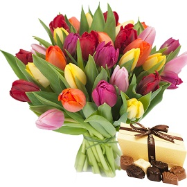
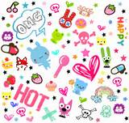

welcome to my first html
Google is a search engine owned by Google. It is the most popular search engine on the Internet. Every day it receives hundreds of millions of visitors sending it about 3 billion requests a day to find content on websites. The engine was originally developed by Larry Page and Sergey Brin in 1997 and serves as Google's homepage.
Flowers
Arrangement of flowers, arranging flowers or designing flowers is the art of creating flower arrangements in vases, bowls and baskets, or preparing flowers from flowers, weeds, decorative plants and other botanical materials. Usually the profession is related to working in a flower shop, and foreign arrangers are usually also flower sellers. However, there are those engaged in weaving flowers not as a profession, but as a hobby; And today it is also common to sell decorated bouquets in gas stations, supermarkets, nurseries and online flower stores. Florists need good eye contact so they can weave flowers without harming them, as well as understanding different types of flowers and their needs.

Party
A party is a social event, which is supposed to amuse and delight the participants. Sometimes it has religious, cultural or seasonal meanings, but the term "party" refers to the social aspect of convergence.
